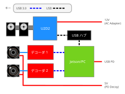

配線

各ケーブルの接続方法について、いくつかの重要な注意事項があります：
- C1カメラ
- USB 3.0対応ハブは両方のカメラに対応する可能性があります。十分な帯域幅があることを確認してください
- Accuvision
- ハブは失敗する可能性があります。Superspeed USB対応ケーブルを使用してJetson/PCに直接接続してください（この理由はまだ不明です）
- カメラは独自の5V電源が必要です。PD デコイモジュールで両方に電力を供給できます
- U2D2：マイクロUSBケーブルが実際にデータラインを持っていることを確認してください（持っていない場合も意外とあります）
- Jetson に関する注意